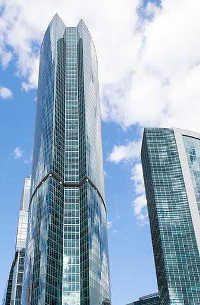

About Our Website
American multinational association that is involved in the design, development, manufacturing and worldwide marketing and sales of apparel, footwear, accessories, equipment and services.The company’s world headquarters are situated near Beaverton, Oregon, in the Portland metropolitan area (USA). It is a major producer of sports equipment and one of the world’s largest suppliers of athletic shoes and apparel. It employs more than 44,000 people worldwide and in 2014 the brand alone was valued as $19 billion (€17,5 billion), making it the most valuable brand between sports businesses.Founded by Bill Bowerman and Phil Knight on January 25 1964, as Blue Ribbon Sports, the company became officially Nike, Inc. on May 30 1971. The company was named after the Greek goddess of victory, Nike (Νίκη). Apart from its own brand, Nike market its products under Nike Pro, Nike+, Nike Golf, Nike Blazers, Air Jordan, Air Max and other as well as subsidiaries including brands Jordan, Hurley Int. and Converse. Nike sponsors many high-profile athletes and sports teams around the world, with the highly recognized trademarks of “Just Do It” and the Swoosh logo (which represents the wing of the Greek goddess Nike). Acquisitions: Nike has acquired several apparel and footwear companies over the course of its history, some of which have since been sold. In order to refocus on its core business lines, Nike began selling some of its subsidiaries in the 2000’s. Since 2013, Nike owns two key subsidiaries: Hurley Int. and Converse, Inc. Nike explore team sport research Lab Nike lab, for more than 30 years, delivers proven scientific insight which helps drive performance innovations across the Nike brand. “Our function is to provide knowledge and insight. We are the global repository for the science of human performance and potential” quotes Matthew Nurse, the Senior Director of the Nike Explore Team Sport Research Lab. The lab team consists of more than 40 researchers in different scientific disciplines such as biomechanics, physiology, physics, math, kinesiology, biomedical engineering and mechanical engineering, Mission The mission of Nike Inc. is to drive product innovation for athletes everywhere.Countless ideas are tested in pursuit of aiding performance, injury risk reduction, enhancing perception and feel, and delivery of innovative products to athletes.
Read More
Our CEO's 
Eve Laurent - Click on image to read more about her
American multinational association that is involved in the design, development, manufacturing and worldwide marketing and sales of apparel, footwear, accessories, equipment and services.The company’s world headquarters are situated near Beaverton, Oregon, in the Portland metropolitan area (USA). It is a major producer of sports equipment and one of the world’s largest suppliers of athletic shoes and apparel. It employs more than 44,000 people worldwide and in 2014 the brand alone was valued as $19 billion (€17,5 billion), making it the most valuable brand between sports businesses.Founded by Bill Bowerman and Phil Knight on January 25 1964, as Blue Ribbon Sports, the company became officially Nike, Inc. on May 30 1971. The company was named after the Greek goddess of victory, Nike (Νίκη). Apart from its own brand, Nike market its products under Nike Pro, Nike+, Nike Golf, Nike Blazers, Air Jordan, Air Max and other as well as subsidiaries including brands Jordan, Hurley Int. and Converse. Nike sponsors many high-profile athletes and sports teams around the world, with the highly recognized trademarks of “Just Do It” and the Swoosh logo (which represents the wing of the Greek goddess Nike). Acquisitions: Nike has acquired several apparel and footwear companies over the course of its history, some of which have since been sold. In order to refocus on its core business lines, Nike began selling some of its subsidiaries in the 2000’s. Since 2013, Nike owns two key subsidiaries: Hurley Int. and Converse, Inc. Nike explore team sport research Lab Nike lab, for more than 30 years, delivers proven scientific insight which helps drive performance innovations across the Nike brand. “Our function is to provide knowledge and insight. We are the global repository for the science of human performance and potential” quotes Matthew Nurse, the Senior Director of the Nike Explore Team Sport Research Lab. The lab team consists of more than 40 researchers in different scientific disciplines such as biomechanics, physiology, physics, math, kinesiology, biomedical engineering and mechanical engineering, Mission The mission of Nike Inc. is to drive product innovation for athletes everywhere.Countless ideas are tested in pursuit of aiding performance, injury risk reduction, enhancing perception and feel, and delivery of innovative products to athletes.
Read More
Steven Gucci - Click on image to read more about him
American multinational association that is involved in the design, development, manufacturing and worldwide marketing and sales of apparel, footwear, accessories, equipment and services.The company’s world headquarters are situated near Beaverton, Oregon, in the Portland metropolitan area (USA). It is a major producer of sports equipment and one of the world’s largest suppliers of athletic shoes and apparel. It employs more than 44,000 people worldwide and in 2014 the brand alone was valued as $19 billion (€17,5 billion), making it the most valuable brand between sports businesses.Founded by Bill Bowerman and Phil Knight on January 25 1964, as Blue Ribbon Sports, the company became officially Nike, Inc. on May 30 1971. The company was named after the Greek goddess of victory, Nike (Νίκη). Apart from its own brand, Nike market its products under Nike Pro, Nike+, Nike Golf, Nike Blazers, Air Jordan, Air Max and other as well as subsidiaries including brands Jordan, Hurley Int. and Converse. Nike sponsors many high-profile athletes and sports teams around the world, with the highly recognized trademarks of “Just Do It” and the Swoosh logo (which represents the wing of the Greek goddess Nike). Acquisitions: Nike has acquired several apparel and footwear companies over the course of its history, some of which have since been sold. In order to refocus on its core business lines, Nike began selling some of its subsidiaries in the 2000’s. Since 2013, Nike owns two key subsidiaries: Hurley Int. and Converse, Inc. Nike explore team sport research Lab Nike lab, for more than 30 years, delivers proven scientific insight which helps drive performance innovations across the Nike brand. “Our function is to provide knowledge and insight. We are the global repository for the science of human performance and potential” quotes Matthew Nurse, the Senior Director of the Nike Explore Team Sport Research Lab. The lab team consists of more than 40 researchers in different scientific disciplines such as biomechanics, physiology, physics, math, kinesiology, biomedical engineering and mechanical engineering, Mission The mission of Nike Inc. is to drive product innovation for athletes everywhere.Countless ideas are tested in pursuit of aiding performance, injury risk reduction, enhancing perception and feel, and delivery of innovative products to athletes.
Read More